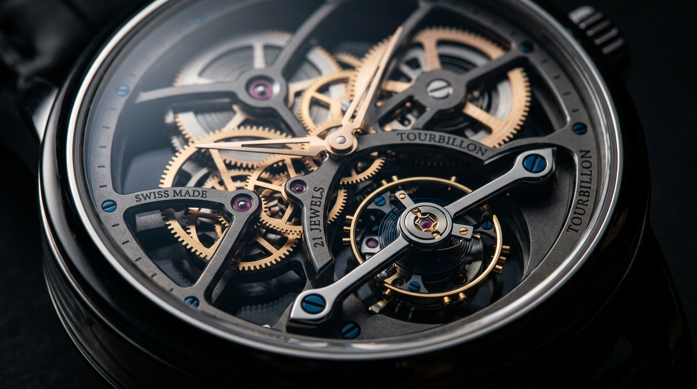
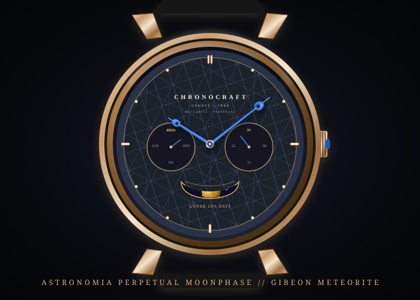
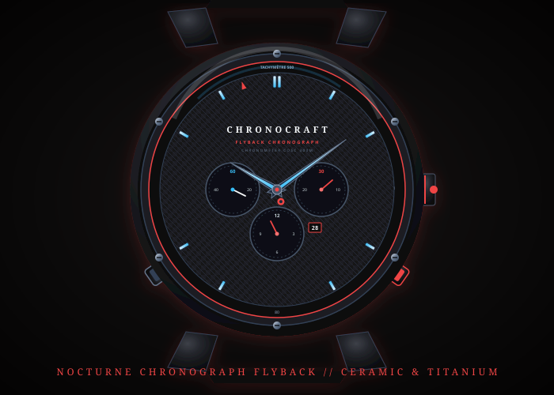

Отлит из титана Grade-5 и 18-каратного медового золота. Ручное англирование граней, трехосный турбийон и анкерный спуск, совершающий 28 800 полуколебаний в час.

Полный мост из сапфирового стекла открывает пульсирующий баланс и золотые регулировочные винты.

Вырезан из подлинного метеорита Гибеон с астрономическим указателем фаз Луны с точностью до 122 лет.

Матовый черный корпус из диоксида циркония с люминесцентными индексами Super-LumiNova BGW9.
Субсекундное измерение времени высокой точности со сглаживанием в реальном времени.